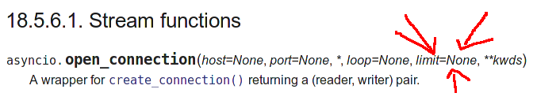

Martin Richard, alwaysdata
Retour d'expérience: un reverse-proxy HTTP avec asyncio
Quelles solutions pour faire de la concurrence avec Python ?
conn = Connection(socket)request = conn.receive_request()conn.send_request(request)response = conn.receive_response()conn.send_response(response)frontend = Frontend(HTTP(), '0.0.0.0', 80)frontend.start() et frontend.stop()Clients,client = Client(connection)read_requests et
write_responses,Handler qui va générer la réponse,500 Internal Server Error si un handler
lève une exception,handler = Handler.issue(request)handler.handle() prépare la réponse,handler.write_response()frontend = Frontend(HTTP(), '0.0.0.0',
80)
request_handlers pour
Client,connection_factory() pour
Frontend.gc.objects(), objgraphmemoryviews:
splice(),
sendfile()),@lru_cache),
martius@martiusweb.nethttps://marti.usMartiusweb